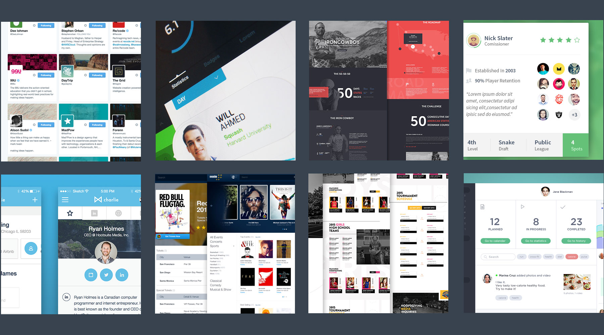

Overhauling the Hudl Manage Roster Experience
Product Definition
The Hudl Manage Roster screen is in need of a redesign. Coaches need a better experience to add players to their roster, manage them, and see what they’re up to.
Competitive Analysis
Looking at how others have tackled similar problems is essential, and should be done in parallel with the Product Definition part of the process. I tried to find as many products with similar features/flows as I could. Having this analysis makes sure I’m not reinventing the wheel and identifies complex areas to be aware of as I started my design.

Map the flow
Assuming your work only affects a single page is like designing a house and assuming you won’t need doors, window or hallways. It doesn’t matter if you’re adding a button to a page or completely overhauling user on-boarding. There’s always a flow.
The first thing I do when I start designing is write down the feature list, and using these features I develop the basic user flow of the design, which in most cases is the primary navigation. However, that was unnecessary in this case, since Hudl already has this figured out. The user flow should always be built in parallel with the most common use cases, so it accommodates to the way users will actually use the design, thus making its usage easier and clearly understandable.
It’s important to try and create multiple user flows, test, and iterate. Often designers will create a first version of what they’re building and stick with it without exploring alternatives. That first version might be good at first sight, but without comparing with alternatives, it won’t show its flaws and drawbacks.
I went ahead and drew this user flow along with some common use cases. The “Manage Roster” features are laid out in a very straightforward way.
We have:
- Add Athlete, which is the way to add/import/export athletes from the roster
- Filter Roster, is the way to filter the roster by seasons, graduation year or positions
- Roster List, is the view of every athlete on the roster with the ability to edit/archive/delete roster members
The use cases depict different kinds of activities when using the manage roster screen. Be it adding athletes to the roster, filter through the roster and just viewing the current roster.
Design
Okay, let’s start designing! I prefer a combination of pencil and paper, Photoshop, Illustrator, Balsamiq, html,css. The goal is to get to something clickable as quickly as possible. After doing all the up-front work I have a pretty good idea for what might be a solid direction. For this project, I’ve decided to sketch a few ideas then go straight into HTML/CSS. This will save me time by doing most of the design iteration and tweaks in the browser. It’s important that the site acts similar in all screen sizes. As such, all browsers and screen sizes need to behave in such ways that users won’t have to relearn everything, essentially forming what we call cross-platform consistency.
Now’s the part where we have to explore layouts for the user flows by organizing the details and connecting the dots. The areas of focus are Add Athletes, Filter Options and Roster list.
Add Athlete
The first area I wanted to address was “Add Athlete”. It consists of multiple form elements to add a athlete’s information to the roster. These are the options I took into account when creating the “Add Athlete” button. At first I went with putting the form on the page similar to the existing version. I didn’t like how much vertical space it demanded, which took away from the roster list.
[Add Athlete - sketches]
I wanted a singular interaction that tells the story of “Add Athlete”. As soon as a user presses the button, a modal comes from the top and takes place on the screen. The modal covers the screen and introduces the new form elements to add a new athlete. The user understands that they caused the change in the UI, making them feel in control.
[Add Athlete - designs]
Filter Options
The filter options already do a pretty good job of displaying the appropriate information. In this section I consolidated all seasons into a dropdown and also adding a few more option for filtering by position and graduation year. Along with the current filter options there is a search field which allows a user to filter by name, graduation year, number or position. This area would be interesting to user test around what filter options coaches use the most.
[Filter Options - sketches]
The filter section itself is pretty straightforward, nothing really needing an explanation here.
[Filter Options - designs]
Roster List
I wanted to explore new ways to layout the roster list by organizing the information in something I’m calling “Athlete Cards”. One of my main goals was to not hide any information under a hover or click but certain interactions required sections to expand. In those sections the expand interaction is consistent across the board. This area took me the longest to get right.
[Roster List - sketches]
These are the options I took into account when creating the “Athlete Cards”. The cards consist of graduation year, position, profile photo, jersey number, invite to Hudl, resend Invite to Hudl, video activity, vitals and account setting. During my first design, I quickly noticed how much information was needed to fit into a small area. The cards were getting to tall so I needed to rethink the information and layout. The thing that saved me the most vertical space was realizing athletes that are not members of Hudl will not have any video activity. Once a user is logged in they don’t need the “invite” button anymore. That left an open space where the “video activity” button would fit nicely. To save even more vertical space on small screens I folded up most of the information. This allows for easy scanning of the entire roster but still having the same functionality of larger screen.